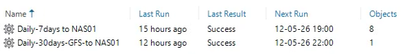

Tutorial – Backup & Disaster Recovery
This check verifies that backup jobs are running recently and according to schedule.
Outdated backup timestamps may indicate:
Open the backup console and navigate to:
Home → Jobs → Backup
Verify that:
